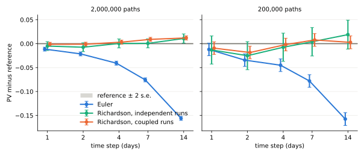
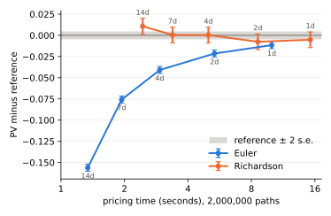

We all learned in our basic numerical calculus courses that an ordinary differential equation of the form $y' = f(t,y)$ with initial condition $y(0) = y_0$ can be solved using Euler stepping. The idea is quite simple: over a small interval $[t,t+\Delta t]$, we have that $$y(t+\Delta t) = y(t) + \int_{t}^{t+\Delta t} f(t, s)ds$$ and approximating the integral using some quadrature method, such as the midpoint approximation $$\frac{1}{ \Delta t } \int_{t}^{t+\Delta t} f(t, y(s))ds \approx f\left(t, y\left(t+\frac{\Delta t}2\right)\right)$$ gives us a way to recursively compute $y$ on a set of grid points. A simpler approach would take the left or right end-points, to avoid having to deal with half-steps. Since $y' = f(t,y)$, a simpler Taylor expansion tells us that a single step of the scheme incurrs an error proportional to $(\Delta t)^2$, and a little bit of work then translates this into a global error of order $\Delta t$. As an example, we can compute $e$ to some decimal places using this method; in my naive Python implementation I got that $\left|y(1) - \hat y(1)\right|$ was proportional to about $4.077\Delta t$.
This very same idea works well for stochastic differential equations, for which we are, in the simplest case, usually interested in computing the expected value of a functional of the stochastic process $y$ at some future time $t_*$. Thus, let us consider a stochastic ODE of the form $$ dy = f(t,y) dt + g(t,y) dw $$ where $w$ is a standard Brownian motion (in some dimension that we do not care about); the functions $f$ and $g$ are deterministic and differentiable, with bounded derivatives.
As we mentioned just now, our goal is to estimate $\mathbb E(\varphi(y(t_*)))$ at some future time $t_*$. Using Euler stepping with step size $h=\Delta t$, affords us with an estimate $\mathbb E(\varphi(y^h(t_*)))$, and it is well known that the error $$\mathsf{Err}(t_*, h) = \left|\mathbb E(\varphi(y^h(t_*))) - E(\varphi(y(t_*)))\right| $$ is again of order $h$. The work of Talay--Tubaro [3], however, shows that one can expand this error in powers of $h$ to obtain $$ \mathsf{Err}(t_*, h) = C_1 h + C_2 h^2 + \cdots$$ where the constants depend only on $t_*$ and the process $y$. The proof is somewhat technical, but at the end it shows that for the Euler scheme, there exists a function $\psi(t, y)$ such that $$\mathsf{Err}(t_*, h) = h \int_0^{t_*} \mathbb E\psi(s, y(s)) ds + O(h^2),$$ which is quite a good-looking result! Talay has several publications on the discretization of SDEs, see for example [1] and [2].
With the Talay--Tubaro formula at hand, one can use a simple way to improve the quality of the estimate. It is called Richardson extrapolation, although it has been apparently used before, going back to estimation of the value of $\pi$ in the 17th century. The idea is simple: if we know that some value $\alpha^*$ is the limit of $\alpha(h)$ as $h\to 0$, and we also know that $\alpha(h) = C_1 h + C_2 h^2 + \cdots$, then $$\alpha_R(h) = 2\alpha(h)-\alpha(2h)$$ also converges to $\alpha^*$, and the convergence is at a quadratic, instead of a linear, rate. If computing $\alpha(h)$ costs us a unit of work, then the improvement of the approximation quality at the same $h$ is simply two units of work. In the language of Monte--Carlo estimation: using say a weekly simulation step of about $h= 0.02$ years, we can obtain a bias in time comparable to $0.0004$ years, which is about a tenth of a day, at the cost of just two Monte--Carlo runs. The rule is simple, and can even be used for non-uniform time steps:
To test it, let us price a one-year monthly cliquet. We use a Dupire local volatility model [6], with the local volatility surface obtained from an SVI fit [7] to a smile similar to that of SPX. We fix a flat 3% rate, with a 1% dividend yield. The cliquet pays the sum of the twelve monthly returns, each floored at zero and capped at $2\%$. This is a typical product for which one needs a simulation: its value depends on the forward volatility smile, and there is no closed form for its PV; in fact, it is well known that its PV is strongly model dependent. Its payoff has kinks at the floor and the cap, so it is not smooth, as the Talay–Tubaro expansion asks; Bally and Talay [8] show that the expansion still holds for merely measurable payoffs, provided the diffusion is non-degenerate.
I varied the time step from 14 days down to a single day, once with two million paths per point (left panel) and once with 200,000 (right panel). As reference, I took the Richardson estimate at a daily step with eight million paths, which gives $10.4280\% \pm 0.0023\%$ coupon on a given notional.

With two million paths, the Euler bias is almost exactly linear in the step, as it should be, and the Richardson trick removed most of it at 14 days ($+0.011$) and all of it, to within the noise, from a week down: at a weekly step the extrapolated price is $10.4285 \pm 0.0047$, while the plain weekly estimate is off by $0.7\%$. The daily Euler estimate is still further from the reference than the weekly Richardson estimate, at about three times the cost (see the table below).
With 200,000 paths, a more usual budget, the Euler estimates at 14 and 7 days are off by 23 and 12 standard errors, while the weekly Richardson estimate sits at $10.432 \pm 0.015$, only a third of a standard error from the 8M path reference. It is fair to remark, that below four days, the Euler bias is comparable to the noise, and the two schemes can no longer be told apart. In both panels the standard errors behave as predicted by our previous computation, with Richardson errors about $2.23$ times Euler's: $47$ against $21$, and $150$ against $66$, all one in ten thousand.
The pricing times, on an Apple M5 with 10 cores, are:
| step | Euler, 2M | Richardson, 2M | Euler, 200k | Richardson, 200k |
|---|---|---|---|---|
| 14 days | 1.34 s | 2.44 s | 0.15 s | 0.27 s |
| 7 days | 1.94 s | 3.38 s | 0.21 s | 0.37 s |
| 4 days | 2.94 s | 5.00 s | 0.31 s | 0.52 s |
| 2 days | 5.34 s | 8.58 s | 0.54 s | 0.88 s |
| 1 day | 9.98 s | 15.22 s | 1.01 s | 1.56 s |
As a run has a fixed cost besides the paths, the ratios are not quite those of the step counts: Richardson costs about $1.7$ times a plain run at the same step, and a daily Euler run costs about five times what a weekly run costs. The conclusion: the weekly Richardson estimate is about three times cheaper than the daily Euler estimate, and closer to the reference. Plotted against runtime, the Richardson curve lies well above the Euler curve up to about five seconds: for the same budget, the extrapolated estimate is several times closer to the reference. Beyond that, at steps of two days and less, the two meet within the noise band.

Richardson extrapolation combines two grids, and this idea can be pushed further. Multi-level Monte Carlo simulation, introduced by Giles [9], uses a whole sequence of them, with many cheap paths on the coarse grids and few expensive ones on the fine grids, and is a natural generalisation of the Richardson rule. Belomestny, Dickmann and Nagapetyan [10] use multilevel approximation to price American and Bermudan options.